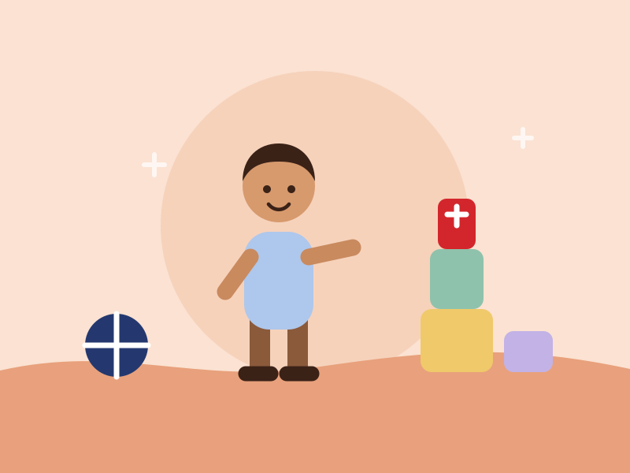
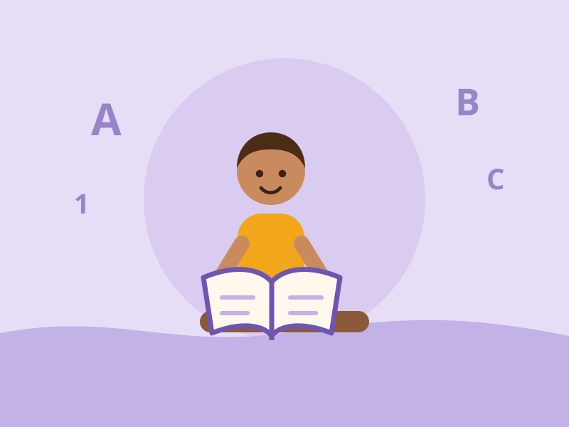
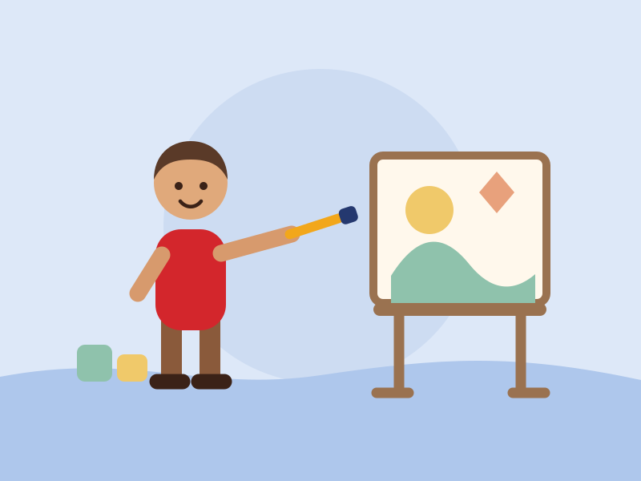

Music & movement
Singing, clapping, drumming and dancing — rhythm that children feel in their whole body before they ever read a note.
Home/Programmes
Four groups, one idea: children learn best when they are doing something. Class groupings follow the school's own arrangement — call us and we will tell you which class suits your child.

First steps away from home
The gentlest start we can give. For many children this is the first long stretch of the day away from home, so settling comes before everything else.
Days are built on a predictable rhythm — greeting, songs, play, food, rest — because a child who knows what happens next is a child free to explore. We work on sharing, taking turns, naming feelings, holding a crayon, and simply being happy in a room full of other children.

Letters, numbers, confidence
The nursery years are where the foundations are laid — the sounds of letters, the shape of numbers, and the habit of asking why.
Children work in small groups so a teacher can sit with them. Reading starts with stories and sounds rather than drills; number work starts with counting real things. Writing grows out of drawing, which grows out of play.

The first primary year
P.1 is a big step, and children take it better from a place that already knows them.
The work becomes more formal — reading, writing and number work with books and exercises — but the care does not change. Small groups mean a teacher notices quickly when a child is stuck, and the day still has room in it for play, music and running about.
Through the week
Singing, clapping, drumming and dancing — rhythm that children feel in their whole body before they ever read a note.
Painting, cutting, modelling and building. Messy work with real materials, and the patience to let a child finish it.
Running, ball games and group play in the open air — the fastest way children learn fairness, turn-taking and how to lose well.
A typical day
An outline of the rhythm children settle into. Exact class times are confirmed when you enrol.
Children are received and settled, and greeted by name.
Songs, prayer, the day's news and a story together.
Letters, numbers and hands-on work in small groups.
Fresh air, running and group games.
A proper break — eating together, then quiet time.
Music, movement, art or outdoor play.
Children choose, then put the room back together.
A word with parents, and off home.
Admissions open
Tell us their age and what they are like, and we will tell you honestly where they would fit best.
0774 197 708